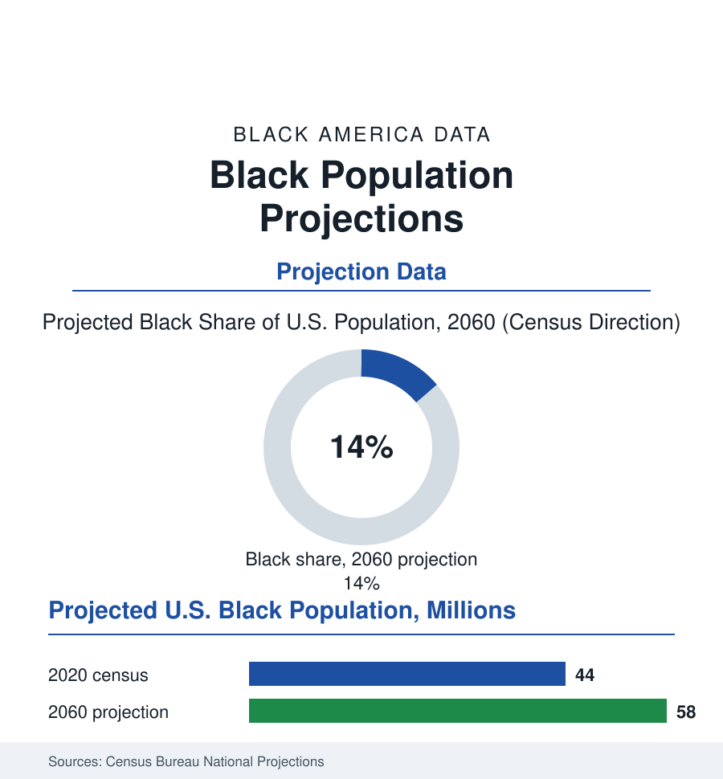

Black Census
The Future Counted: Black America's Next Fifty Years
The Census Bureau's projections describe a Black population still growing — older, more immigrant, more Southern and suburban — inside a nation crossing its own demographic thresholds. The projection file.

Every number in this book so far has been a measurement of the past. The Census Bureau also publishes the future — its national projections, the demographers' best model of the population's next half-century — and the Black rows of that model hold a distinct story: growth without explosion, aging without precedent, and a composition transformed by the same two engines as the present: the South and the immigrant gate. This article reads the projection file.
The Shape of the Curve
The headline numbers are the bureau's main series: the Black population rising from the 2020 census's forty-four million toward the high fifties of millions by 2060, its share of the nation holding near an eighth and inching — a stability that is itself the story in a country whose total composition the projections famously remake (the non-Hispanic white share descending through the majority line in the mid-2040s of the main series, the nation's majority-minority crossing the projections' most-reported date). Beneath the headline, the model's machinery is this book's own chapters pointed forward: the fertility file's convergence (the Black birth rate at and below replacement in the model's assumptions — the growth carried, therefore, by momentum and migration: the young age structure's echo and the immigration rows), the immigrant file's compounding (the foreign-born Black share rising across the projection's decades, the African and Caribbean gates supplying a growing fraction of the increase — the 2060 Black population modeled, on current trends, as substantially more immigrant and second-generation than today's), and the mortality file's assumptions doing quiet, enormous work (the life-expectancy convergence the model builds in — the gap's assumed narrowing writing millions of elders into the future counts, the projection's most consequential kindness). The aging is the curve's steepest feature: the Black 65-and-over population roughly doubling across the projection, the median age climbing through the thirties — the elders file, the care file, the pension file's constituencies swelling on schedule the actuaries can read to the year.
What the Model Cannot Hold
The bureau publishes its assumptions beside its numbers, and the honest reading of the projection file is a reading of both: the migration policy of fifty unknowable Congresses compressed into a net-flow constant, the fertility of the unborn assumed from the behavior of their unmet parents, the racial categories themselves — the model's deepest assumption — projected as if the census's boxes of 2020 will mean the same in 2060, when the multiracial file's growth curve in this very book suggests the boxes are the fastest-moving variable of all (the 2060 count of Americans of Black ancestry, under any broader definition, standing far above the single-race projection — the identity file outrunning the enumeration file inside the bureau's own workbook). The demographers' professional humility is built into the product: the alternative series, the high and low variants, the zero-migration thought experiment — a fan of futures whose spread is the true finding. For this atlas the projection's uses are the planning files': the school district reading its enrollment decade in the kindergarten rows, the health system sizing the eldercare workforce the doubling demands, the church and the business reading their constituencies' futures in the only document that attempts them. The past volumes of the same series make the file's closing exhibit: the projections of 1970, read today — the baby boom's echo overestimated, the immigration that remade the count unforeseen, the categories quietly revised — the future of Black America having arrived, as it always does, substantially as modeled in the totals and almost nowhere as imagined in the composition. The count, the file predicts, will hold. Everything inside it will be a surprise. That has been the finding of every census since 1790, and the projection — the bureau's own numbers, read whole — says so itself.
Reading the Projection Data
The projection file is the census section's forward mirror: the population's future, modeled with care and guaranteed to be wrong in the interesting ways. The bureau publishes the series. The alternative series — printed right beside it — publishes the humility, and the two together are the honest forecast. The count, the bureau insists, holds either way, still.
More in Black Census
The Black Population of the United States: Size, Definitions, and Distribution
The Black population of the United States totals 52.8 million — 15.4 percent of the nation. How the Census Bureau defines and counts the population, and where it lives.
Black Median Household Income in the United States
Black median household income stands at $56,490 in the Census Bureau's annual income report — how the figure is measured, how it compares, and what drives it.
The Black Poverty Rate: Levels, Children, and the Long Trend
The official Black poverty rate is 17.1 percent — against 11.1 percent nationally and 7.7 percent for non-Hispanic White Americans. How poverty is measured and what the data show.
Source: U.S. Census Bureau National Population Projections; Pew Research Center demographic analyses; Social Security Administration actuarial assumptions.